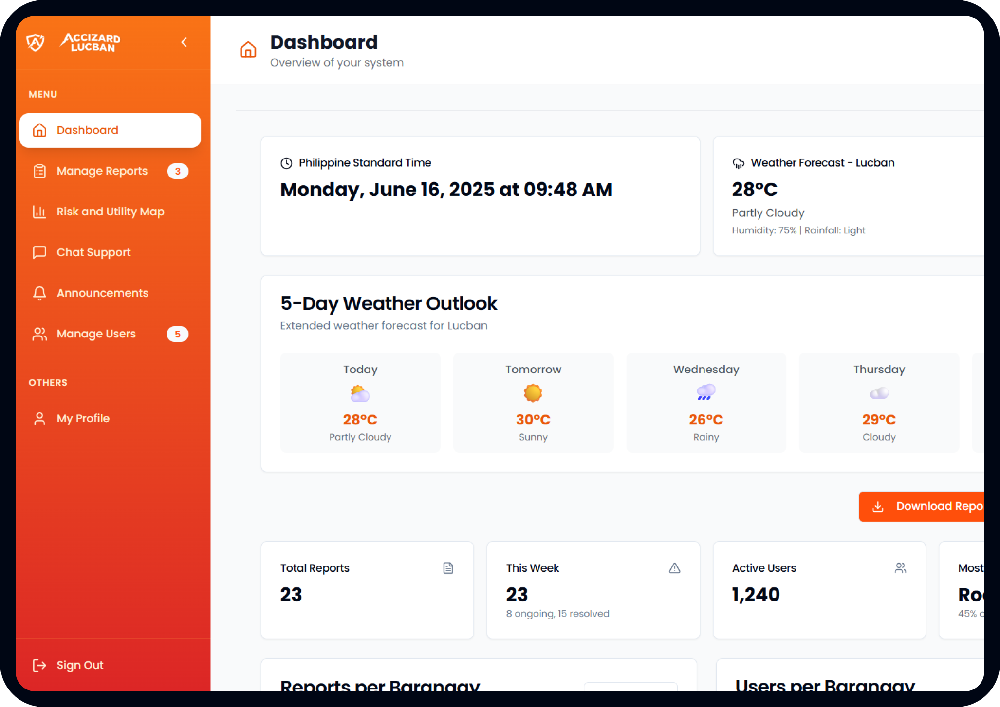
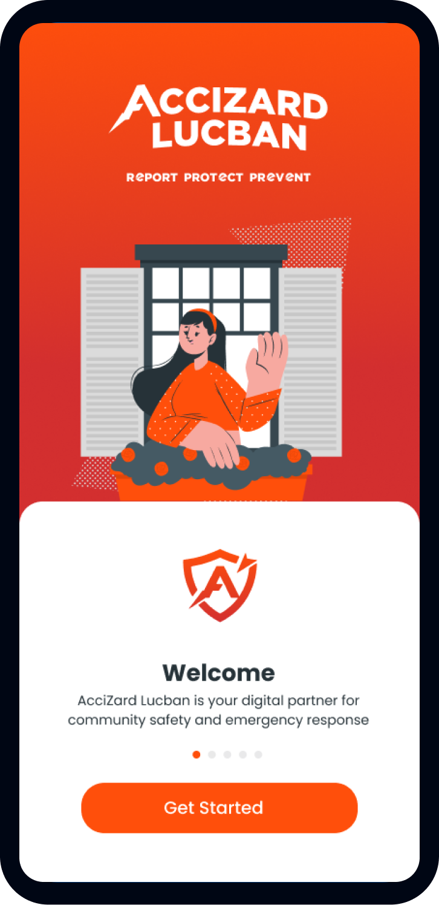

Welcome to AcciZard Lucban, a cutting-edge web application dedicated to enhancing urban safety in Lucban City. Aligned with UN Sustainable Development Goal 11: Sustainable Cities and Communities, our platform empowers residents to report accidents and track hazards in real-time.
Developed by a passionate team of researchers from Southern Luzon State University, AcciZard Lucban fosters collaboration and awareness by providing an easy-to-use interface for hazard monitoring. Together, we aim to create safer, more sustainable communities by bridging technology and public safety.
Join us in building a resilient Lucban—report, track, and make a difference!
Our mission is to enhance urban safety and resilience in Lucban City by leveraging technology to provide a reliable, user-friendly platform for accident reporting and hazard tracking. We strive to empower residents with tools for real-time awareness, promote active community engagement, and foster a culture of preparedness and collaboration. By aligning with global sustainability goals, we aim to build safer, smarter, and more sustainable communities for current and future generations.
We envision AcciZard Lucban as a cornerstone of urban safety in Lucban City, where technology and community collaboration unite to create a safer and more sustainable environment. Our goal is to inspire proactive citizen participation, establish a trusted network for hazard monitoring, and contribute to the development of disaster-resilient cities. Through innovation and dedication, we aspire to be recognized as a model for sustainable urban safety solutions both locally and globally.
Powerful tools for community safety
Capture and submit hazards with photos, videos, and GPS location data instantly.
Admins monitor and manage reports in real time through our comprehensive web interface.
Real-time alerts keep users aware of hazards and safety updates in their area.
Built for faster reporting and response, creating safer communities together.
Simple 4-step process for safer communities
Identify a hazard or safety concern in your area
Capture photos, videos and submit with GPS location
Admins review and verify the reported incident
Appropriate action is taken to address the hazard
See Accizard in action
Learn more about Accizard — how it works, its features, and how it helps you report and monitor hazards effectively.
Stay informed with the latest updates from PAGASA, DOST, and NDRRMC